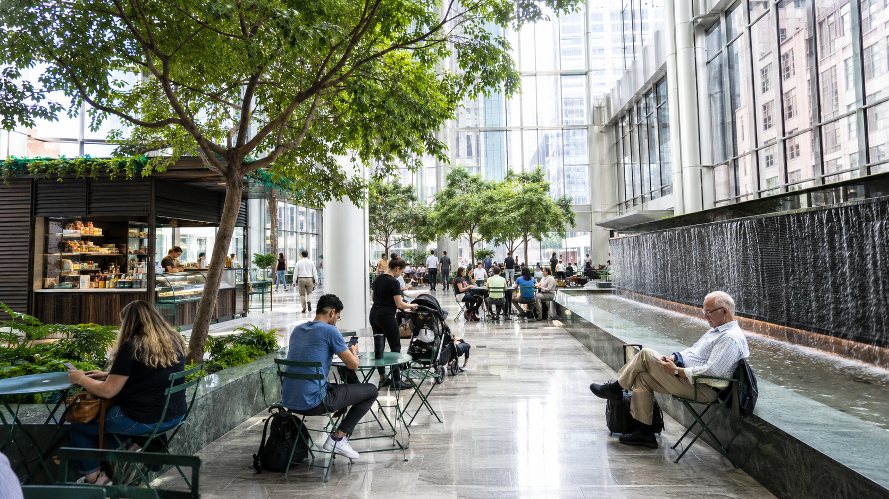
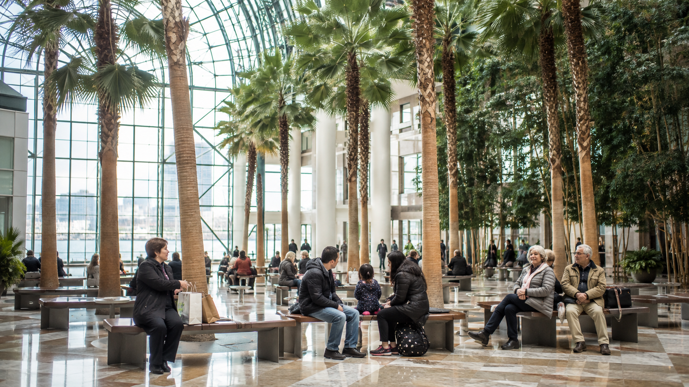
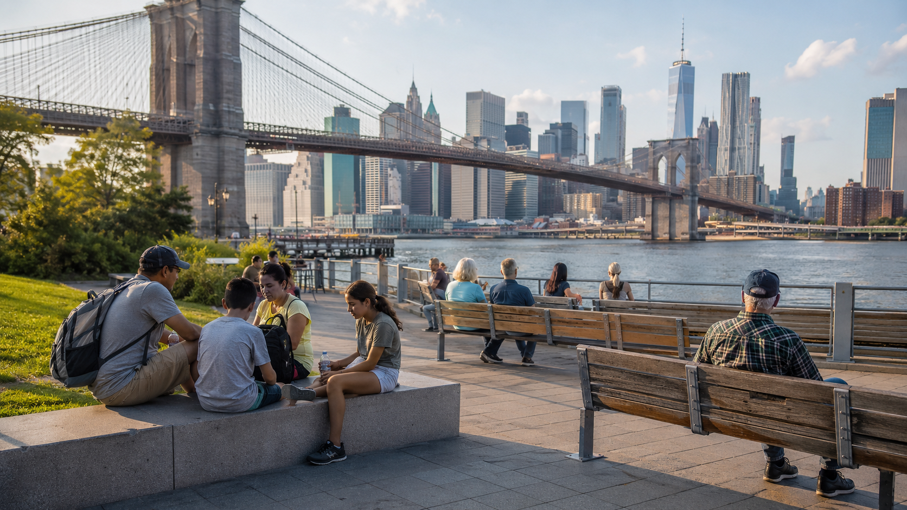

New York is an incredible walking city, but it is not always a kind sitting city.
That sounds dramatic until you are 14,000 steps into the day, holding a half-finished coffee, looking for a bathroom near Times Square, and realizing every "quick stop" has a line, a code, a purchase requirement, or nowhere to sit.
So here is my real rule for NYC sightseeing: plan your rest stops the same way you plan your attractions. The difference between a magical New York day and a miserable one is usually not the subway. It is whether you know where to sit down for 20 minutes without feeling like you are loitering.
Quick Answer: Best NYC Rest Stops Near Tourist Attractions
| Near This Attraction | Best Rest Stop | Bathroom? | Indoor? | Why I Like It |
|---|---|---|---|---|
| Times Square / Bryant Park | Bryant Park | Yes | No | Best outdoor seating setup in Midtown |
| Grand Central / SUMMIT | Grand Central Dining Concourse | Yes | Yes | Reliable indoor reset between subway/train chaos |
| Rockefeller Center / Fifth Ave | 550 Madison Public Garden or Park Avenue Plaza | Yes, usually | Mixed | Better than hovering inside a crowded store |
| Central Park South | The Shops at Columbus Circle | Yes | Yes | Good cold/rain backup before or after the park |
| The Met | Museum galleries / Central Park restrooms | Yes | Yes at museum | Best for seated recovery if you are already visiting |
| AMNH | Museum seating/restrooms | Yes | Yes | Excellent with kids and older travelers |
| High Line / Chelsea | Pier 57 or Little Island | Yes | Pier 57 yes | Pier 57 is the stronger true rest stop |
| 9/11 Memorial | Oculus or Brookfield Place | Yes | Yes | Best Lower Manhattan weatherproof combo |
| Statue of Liberty Ferry / Battery | Whitehall Terminal or The Battery | Yes | Terminal yes | Practical before or after the ferry |
| Brooklyn Bridge / DUMBO | Brooklyn Bridge Park Pier 1 Pavilion | Yes | Partly | Rest after the bridge, not on it |
| SoHo / Chinatown / LES | Essex Market or Bloomingdale's SoHo | Yes | Yes | Better than gambling on cafe bathrooms |
NYC DOT public seating resources →
My NYC Rest Stop Rule
A good NYC rest stop needs at least two of these four things:
The best places on this list are not always the prettiest. They are the places that actually work. For how rest stops fit into a realistic NYC day: How Many NYC Attractions Can You Realistically Do in One Day?
If someone asked me for one easy Midtown rest stop, I would send them to Bryant Park. It is close to Times Square without feeling like Times Square, which is already a win. You get movable chairs, tables, shade, food kiosks, the New York Public Library backdrop, seasonal activities, and some of the most reliable public bathrooms in Midtown.
This is the rare tourist-area spot where sitting down feels like part of the design, not like something you are sneaking in. Official Bryant Park public restrooms →
Bryant Park is also the recommended rest stop when arriving in NYC before hotel check-in — it opens early, has a staffed restroom, and gives you a genuine break without any purchase pressure. See: What to Do in NYC Before Hotel Check-In →
Grand Central is not peaceful, exactly. It is still a train terminal. But it is useful, central, weatherproof, and has restrooms on the Lower Level Dining Concourse. I like it as a functional reset: bathroom, food, a few minutes indoors, then back out. It is especially helpful before or after SUMMIT One Vanderbilt, Bryant Park, the Chrysler Building area, or a Midtown East walking route.
The mistake is expecting it to feel calm during rush hour. Go mid-morning, mid-afternoon, or later evening and it works much better. Official Grand Central Terminal visitor details →
This is one of my strongest NYC opinions: privately owned public spaces (POPS) are one of the best tourist tools in Manhattan, and most visitors have no idea they exist. NYC privately owned public spaces map →

These spaces can include indoor atriums, covered plazas, public gardens, tables, chairs, bathrooms, and climate control. Some are better than others, and access can change, but when they work, they are gold.
| Space | Area | Why It Works |
|---|---|---|
| Park Avenue Plaza | Midtown East | Indoor, climate-controlled, tables, chairs, public seating energy |
| 550 Madison Public Garden | Fifth Ave / Midtown | Beautiful garden, seating, restrooms, strong Rockefeller/MoMA backup |
| 590 Madison / IBM Atrium | Fifth Ave | Useful if open and accessible, but verify before relying on it |
Park Avenue Plaza is the kind of place I would mark before a Midtown sightseeing day. It is not flashy, but it solves a very real problem: sitting indoors without needing to commit to a full meal.

Brookfield Place is one of the best Lower Manhattan recovery stops, especially after the 9/11 Memorial or One World Observatory. The Winter Garden is big, bright, palm-filled, and genuinely pleasant. It gives you that rare NYC feeling of having space around you. There are bathrooms, food options, seating areas, Hudson River views, and indoor protection from bad weather.
This is where I would send someone who needs a real reset, not just a quick bathroom. Brookfield Place visitor information →
The Oculus is not my favorite place to relax, but it is very useful. It is bright, dramatic, connected to transit, and has multiple restroom locations around the World Trade Center complex. If you are moving between the 9/11 Memorial, subway, PATH, Brookfield Place, or downtown shopping, it can be the fastest practical stop.
Use it for logistics. Use Brookfield Place for lingering. World Trade Center visitor services →
Pier 57 is one of the smartest rest stops on the west side. The Living Room is indoors, public, spacious, and has seating with views. There are food vendors at Market 57, bathrooms, outdoor areas, and rooftop access. It works in summer heat, winter cold, and rainy weather.
If you are walking the High Line, visiting Little Island, or exploring Chelsea Market, Pier 57 is the place I would build into the route. Pier 57 community spaces →
For the complete Chelsea itinerary including Pier 57 and Little Island: One Day in Chelsea NYC: The Perfect Walking Itinerary →
Little Island is gorgeous. It is also small, popular, and not always the calmest place to recover. I like it for a scenic pause, especially in cooler months or early in the day. There are restrooms, water fountains, accessible pathways, and places to sit. But if someone is tired, overheated, hungry, or traveling with kids, I would rather use Pier 57 first and Little Island second. Little Island accessibility and visitor details →
Central Park is full of benches, lawns, walls, and quiet corners, which makes it one of the best places in the city to sit. But bathrooms are more strategic. Do not assume there will be a restroom exactly where you need one. Check the restroom map before you enter, especially if you are with kids, older travelers, or anyone with mobility needs. Official Central Park public restroom map →
| Area | Best Rest Idea |
|---|---|
| Central Park South | Use The Shops at Columbus Circle before or after the park |
| Bethesda Terrace | Sit and linger, but check bathroom location first |
| The Met side | Use museum facilities if visiting, or nearby park restrooms |
| Great Lawn / mid-park | Bring water and know your exit route |
| North end | Quieter, but fewer obvious indoor backups |
The Met is a destination, not a free public lounge, but if you are already visiting, it is one of the better places in NYC to slow down. There is seating throughout the galleries, accessible entrances, restrooms, wheelchair options, and quieter corners if you choose your route well. The museum can still be crowded, but it is a more comfortable kind of crowded than the sidewalk outside. The Met visitor and accessibility information →
For which museum works best for your trip: If You Can Only Visit One Museum in NYC, Which Should It Be? →
The American Museum of Natural History is one of the best choices in the city when you are traveling with kids and need a controlled indoor environment. It has accessible restrooms on every floor, family restrooms, elevators, wheelchair availability, food options, and exhibits that let the day slow down without feeling like you gave up on sightseeing. AMNH accessibility and visitor information →
MoMA is another "if you are already going" rest stop. It is especially useful because Midtown can be brutal when you need a bathroom and a quiet minute. The galleries and facilities are accessible, there are restrooms throughout the building, and seating is available in many areas. If someone has difficulty standing, this is a much better plan than trying to push through Fifth Avenue crowds. MoMA visitor and accessibility information →
Macy's Herald Square is not glamorous advice, but it is useful advice. If you are near the Empire State Building, Penn Station, Herald Square, or 34th Street shopping, Macy's is a practical indoor stop with restrooms, food, elevators, and space to regroup. It is especially useful when the weather is bad.
Arriving near Penn Station before hotel check-in? See the full first-hours guide: What to Do in NYC Before Hotel Check-In →
The Empire State Building has accessible restrooms at the observatory level, which is helpful while you are there. But I would not treat the attraction itself as a rest stop before or after your visit. For a real break nearby, use Macy's, Bryant Park, Koreatown restaurants, or a planned cafe stop. Empire State Building accessibility information →
For the full observation deck comparison: NYC Observation Decks Compared: Edge vs Top of the Rock vs Empire State →
The Staten Island Ferry is one of the best free experiences in NYC, and it can double as a seated break if you time it right. The ride is about 25 minutes each way, and Whitehall Terminal has indoor waiting space. The Battery is also useful before or after the ferry, especially if you need outdoor space, benches, or nearby public restrooms.
Official NYC DOT page with schedules, terminals, and practical details.
Official site for hours, events, restroom locations, and accessibility.
For the full guide to NYC ferry routes: Best NYC Ferry Routes for Tourists, Ranked →

The Brooklyn Bridge is iconic, but it is a terrible place to need a bathroom, shade, or a proper sit-down. My advice: cross the bridge, take your photos, then recover in Brooklyn Bridge Park. Pier 1 Pavilion is the practical anchor because it has restrooms, water fountains, shaded seating, and food nearby.
DUMBO's Washington Street photo spot can be chaotic, so I would not plan to "rest" there. Take the photo if you want it, then move toward the waterfront. Brooklyn Bridge Park Pier 1 Pavilion information →
For the full Brooklyn day guide: One Day in Brooklyn: DUMBO, Brooklyn Bridge & Beyond →
Time Out Market can work well if you want food, bathrooms, and indoor seating in DUMBO. But it is still a popular food hall, so I would treat it as a meal stop rather than a peaceful rest stop. If you need calm first, use Brooklyn Bridge Park. If you need food first, use Time Out Market.
Chelsea Market is worth visiting if you like food halls, browsing, and old industrial spaces. But as a rest stop, it is not always great. It can be crowded, loud, and hard to navigate. Seating is not guaranteed. If you are tired from the High Line, go to Pier 57 first. Then come back to Chelsea Market when you have patience.
For the complete Chelsea and High Line guide: One Day in Chelsea NYC: The Perfect Walking Itinerary →
For the Lower East Side, Chinatown, and Tenement Museum area, Essex Market is one of the better indoor backups. It has food vendors, public market energy, and a much more practical layout than trying to depend on random cafes with bathroom codes. I especially like it when I need a flexible pause without committing to a full sit-down restaurant. Essex Market official hours and location →
Best NYC Rest Stops by Need
| Need | Best Choice |
|---|---|
| Best overall Midtown rest | Bryant Park |
| Best indoor Midtown reset | Grand Central or Park Avenue Plaza |
| Best Lower Manhattan rest | Brookfield Place |
| Best High Line rest | Pier 57 |
| Best Brooklyn Bridge recovery | Brooklyn Bridge Park Pier 1 Pavilion |
| Best with kids | AMNH, Bryant Park, Pier 57 |
| Best for older travelers | Grand Central, Brookfield Place, The Met, MoMA |
| Best rainy-day backups | Grand Central, Brookfield Place, Pier 57, Macy's |
| Best free scenic sit | Central Park, The Battery, Brooklyn Bridge Park |
| Best bathroom-first stop | Bryant Park, Oculus, Grand Central, Brookfield Place |
The Rest Stops I Would Not Rely On
| Place | Why I Would Be Careful |
|---|---|
| Times Square fast food | Bathroom codes, lines, crowds, purchase pressure |
| Port Authority Bus Terminal | Useful for transit, not a pleasant rest plan |
| Brooklyn Bridge walkway | No bathrooms, no shade strategy, constant crowd flow |
| Chelsea Market at peak hours | Fun, but seating can be difficult |
| DUMBO photo spots | Crowded and not designed for resting |
| Subway platforms | Benches are inconsistent, and leaning bars are not enough |
My Ideal NYC Sightseeing Formula
For a full day of sightseeing, I would plan one true rest stop every two attractions. This keeps the day from turning into a survival walk. For the complete day-by-day structure: 5 Days in NYC: The Ultimate First-Time Itinerary
What to Pack So Rest Stops Work Better
| Item | Why It Helps |
|---|---|
| Reusable water bottle | Many parks and public spaces have refill spots |
| Portable charger | Rest stops are easier when you are not rationing battery |
| Comfortable walking shoes | Non-negotiable in NYC |
| Compact umbrella or rain jacket | Rain changes the city fast |
| Small snack | Useful when food lines are ridiculous |
| Hand sanitizer | Public bathrooms vary wildly |
For the complete NYC packing guide: NYC Packing List by Season: What You'll Actually Use →
FAQ: Where to Sit and Rest in NYC
Where can I sit for free in Midtown Manhattan?▾
What is the best bathroom near Times Square?▾
Where should I rest after walking the Brooklyn Bridge?▾
Where can I rest near the 9/11 Memorial?▾
Is Chelsea Market a good place to rest?▾
What is the best indoor rest stop near the High Line?▾
What are POPS in NYC?▾
Where should I rest with kids in NYC?▾
Final Opinion: Rest Stops Make NYC Better
New York rewards people who keep moving, but the best NYC days are not the ones where you never stop. They are the ones where you know when to pause.
My strongest advice is simple: do not wait until everyone is cranky, cold, overheated, hungry, or desperate for a bathroom. Build the rest stop into the route. Bryant Park, Grand Central, Brookfield Place, Pier 57, Central Park, and Brooklyn Bridge Park can completely change how your day feels.
One ends with "New York exhausted me." The other ends with "I could do another neighborhood." The rest stop is usually the only variable.
For the full first-time NYC trip structure: 5 Days in NYC: The Ultimate First-Time Itinerary • NYC in 4 Days: Relaxed vs Maximum-Sightseeing Itinerary